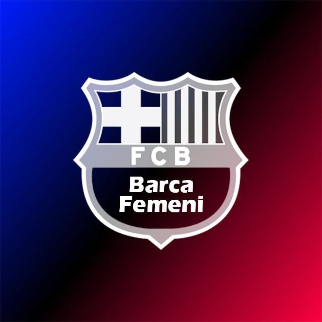

پیشنمایش لحظهای · خروجی ۲ برابر وضوح پوستر
لیگهای ثبتشده در بانک سایت؛ فقط لیگا اف فعال است.
پالتهای آماده از بانک رنگ WoSoCenter
لوگوها از بخش مصاحبهساز WoSoCenter خوانده میشوند.

انتخابگر رنگ اختصاصی WoSoCenter
نام فونت و پیشنمایش «بارسلونا» با همان فونت
تصاویر دلخواه و طرحهای گرافیکی آماده
مانند مصاحبهساز: کشیدن آزاد با موس/لمس، اسکرول موس برای زوم، دو انگشت برای جابهجایی و زوم.
همان تصویر با دو وضوح مختلف؛ حجم واقعی PNG پس از آمادهسازی نمایش داده میشود.
هر دو خروجی فرمت PNG دارند و بدون افت کیفیت فشردهسازی JPG ساخته میشوند.
برای بازکردن هر صفحه روی تصویرش بزنید؛ سایر صفحات ذخیره میمانند.
دانلود همه صفحات بهصورت PNGهای جداگانه با کیفیت ۲۱۶۰×۲۷۰۰ انجام میشود. مرورگر ممکن است برای دانلود چند فایل اجازه بخواهد.